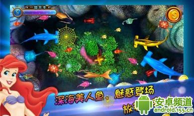

来源：155.cn 2014-07-23
说起《巨魔大战维京人》这款游戏，估计没有几个玩家听说过，但一提到《植物大战僵尸》那可就是家喻户晓了。没错，本作《巨魔大战维京人》正是《植物大战僵尸》的翻版，不仅是翻版，而且还是修改版。这款游戏到底有什么特色呢，请听小编娓娓道来。

一听到翻版，估计很多玩家就开始为原版愤愤不平了。不过在小编看来，山寨和创新，只不过是硬币的正反面。任何公司都是从模仿起步，不会模仿，何来创新。况且这款游戏确实有自己的特色，值得一玩。游戏的背景设置在一片丛林之中，在绿树围绕的田野上，一群拿着武器的维京人正准备攻击巨魔族，游戏中浓厚的色彩填充画面显得非常的有层次感，春夏秋冬的四季变化让画面更加丰富。
一听到翻版，估计很多玩家就开始为原版愤愤不平了。不过在小编看来，山寨和创新，只不过是硬币的正反面。任何公司都是从模仿起步，不会模仿，何来创新。况且这款游戏确实有自己的特色，值得一玩。游戏的背景设置在一片丛林之中，在绿树围绕的田野上，一群拿着武器的维京人正准备攻击巨魔族，游戏中浓厚的色彩填充画面显得非常的有层次感，春夏秋冬的四季变化让画面更加丰富。